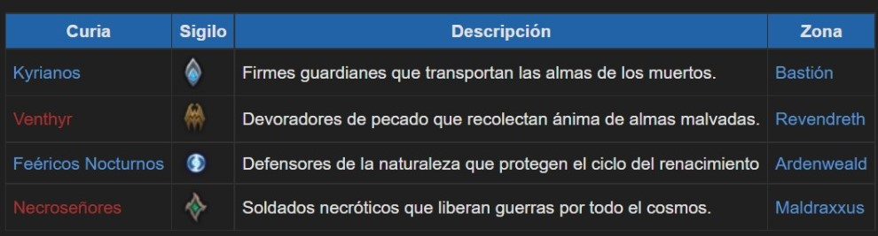

FACCIONES
En las Tierras Sombrías se juntan una misteriosas congregaciones llamadas Curias. Estos grupos tienen una ambición concreta respecto a sus tierras, y un objetivo para restaurar el equilibrio del más allá.
RECOMPENSAS
Obtendrás acceso al sagrario de tu pacto, donde aceptarás misiones únicas, te embarcarás en la campaña de tu pacto e invocarás a tus aliados para que lleven a cabo misiones importantes. Además, aprenderás facultades únicas en función de tu pacto y clase, adquirirás una montura y aspecto únicos y forjarás lazos con poderosas almas, cuya esencia te ayudará a personalizar aún más tus habilidades.
- Acceso al Sagrario
- Facultades del Pacto
- Transfiguraciones y monturas
LAS CURIAS
Las Curias son unas antiguas y poderosas ordenes que gobiernan los los distintos reinos de las Tierras Sombrías. Estos pactos han existido desde que las Tierras Sombrías se formaron hace mucho tiempo y tienen el deber de cumplir con ciertas actividades que mantienen en equilibrio el mundo después de la muerte.
